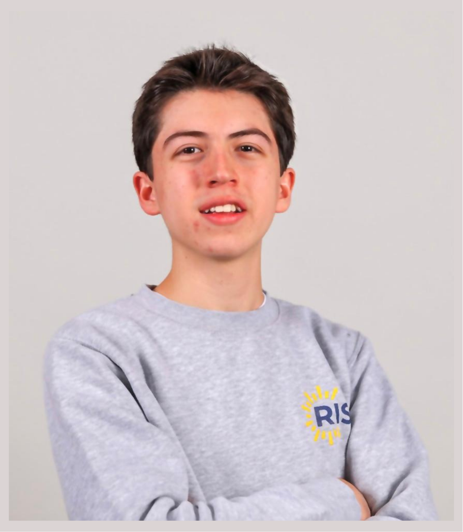

B.S. Electrical Engineering, Photonics Concentration
UC San Diego · Expected June 2028

I'm an electrical engineering student focused on optical systems: designing and simulating them in Zemax, aligning and characterizing them in the lab, and prototyping the electromechanical hardware around them.
I'm looking for optical engineering internships. I also care a lot about science communication and making optics accessible to students.
Computational Imaging Lab, UC San Diego
SPIE Photonics Society at UCSD
Baboshka Optical Development